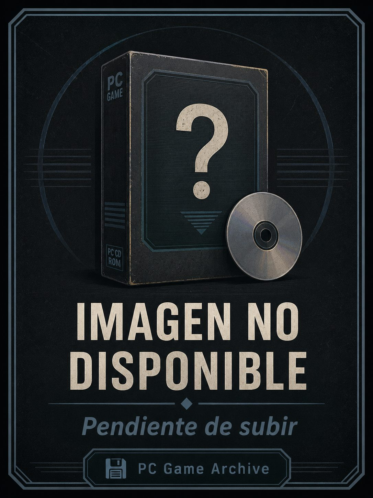

Ficha #000000
Tigershark
Tigershark es un juego de acción y simulación de combate futurista desarrollado por n-Space y publicado por GT Interactive Software en la segunda mitad de los años noventa. Ambientado en el año 2060, plantea un escenario de guerra tecnológica en el que el jugador pilota un vehículo híbrido de combate capaz de operar tanto bajo el agua como sobre la superficie, enfrentándose a submarinos, buques, aeronaves y defensas enemigas. Su propuesta combina el lenguaje de los simuladores militares de PC con una ejecución más arcade, apoyada en entornos 3D, combate rápido y una estética de ciencia ficción militar propia de la era Windows 95 y DirectX. Esta edición europea en caja grande para PC CD-ROM presenta textos multilingües en el reverso, incluido castellano, y conserva interés documental por representar una producción temprana de n-Space antes de su etapa más conocida en consolas y por situarse en el cruce entre simulador, shooter vehicular y combate naval futurista.
- Formato
- Big Box
- Plataforma
- Win95
- Género
- Simulación militar Combate vehicular Acción Ciencia ficción Combate naval
- Serie
- Todos Big Box
- Desarrollador
- n-Space
- Distribuidor
- GT Interactive Software
- EAN
- —
Contenido de la edición
- Caja Big Box
- CD-ROM
- Manual de instrucciones
Preservación
- Protección
- No determinado
- Formato recomendado
- BIN/CUE
- Jugable en virtualización
- Sí
Preservación recomendada mediante imagen completa del CD-ROM original en formato BIN/CUE o ISO, documentando además caja, etiquetas, manual y posibles datos de edición. Al tratarse de un título de Windows 95 con gráficos 3D de época, la ejecución virtual debería realizarse preferentemente en un entorno Windows 9x con DirectX compatible, verificando si la edición concreta aplica comprobación de disco durante instalación o arranque.